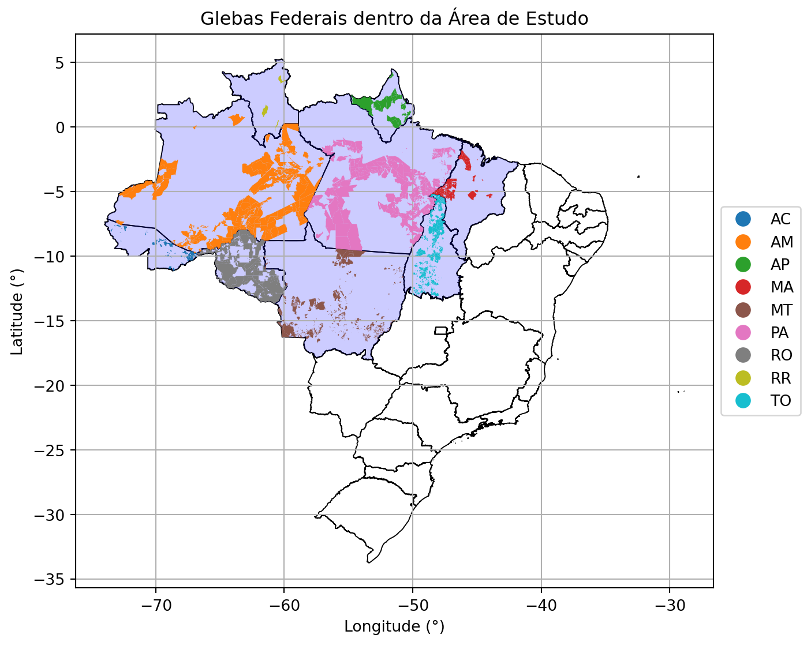
5 Delimitação Geográfica
Análise dos dados literais e espaciais das Glebas Públicas Federais do INCRA dentro da Amazônia Legal e do estado do Maranhão.
A área de estudo esté dentro dos limites da Amazônia Legal incluindo-se a parte do estado do Maranhão que encontra-se fora da delimitação aficial (Figure 5.1).
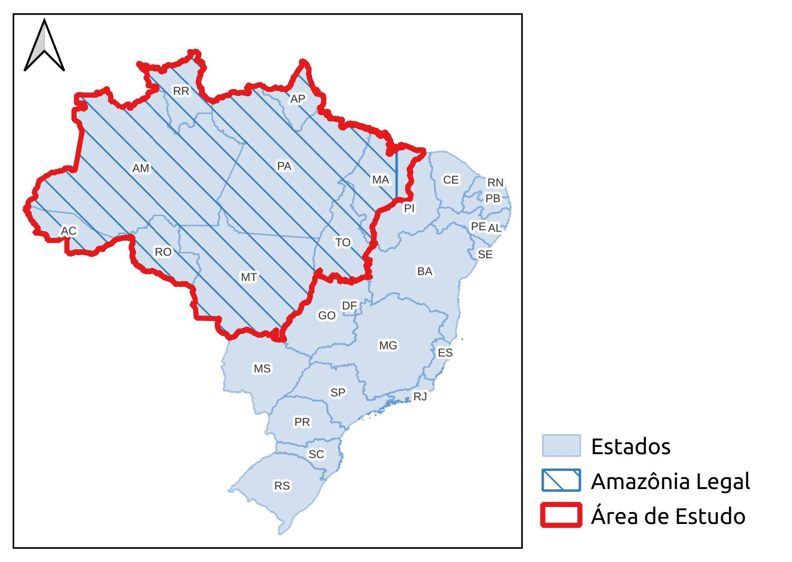
5.1 Mapa das Glebas Públicas Federais dentro da área de estudo.
5.2 Total de área das Gebas Federais por Unidade da Federação
| UF | Área (km²) |
|---|---|
| AC | 15.563,3090 |
| AM | 387.961,0552 |
| AP | 48.644,4545 |
| MA | 32.497,7408 |
| MT | 79.546,5842 |
| PA | 372.493,7720 |
| RO | 163.572,2673 |
| RR | 4.994,1232 |
| TO | 55.653,6272 |
1km² = 100ha
5.3 Mapa de glebas federais por unidade da federação.
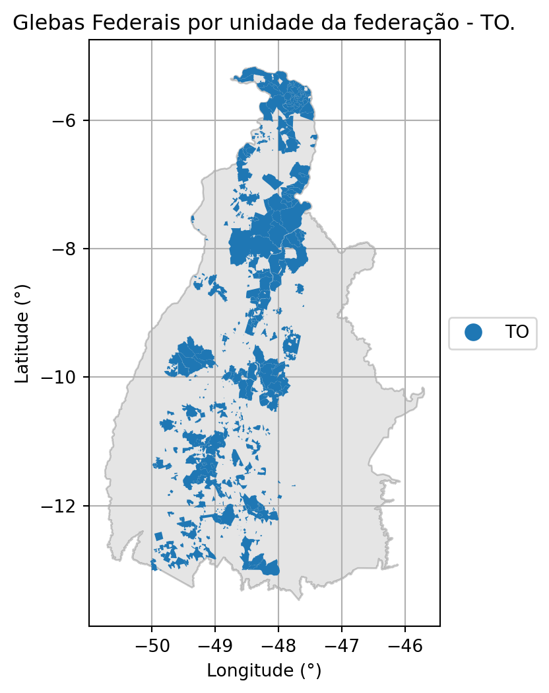
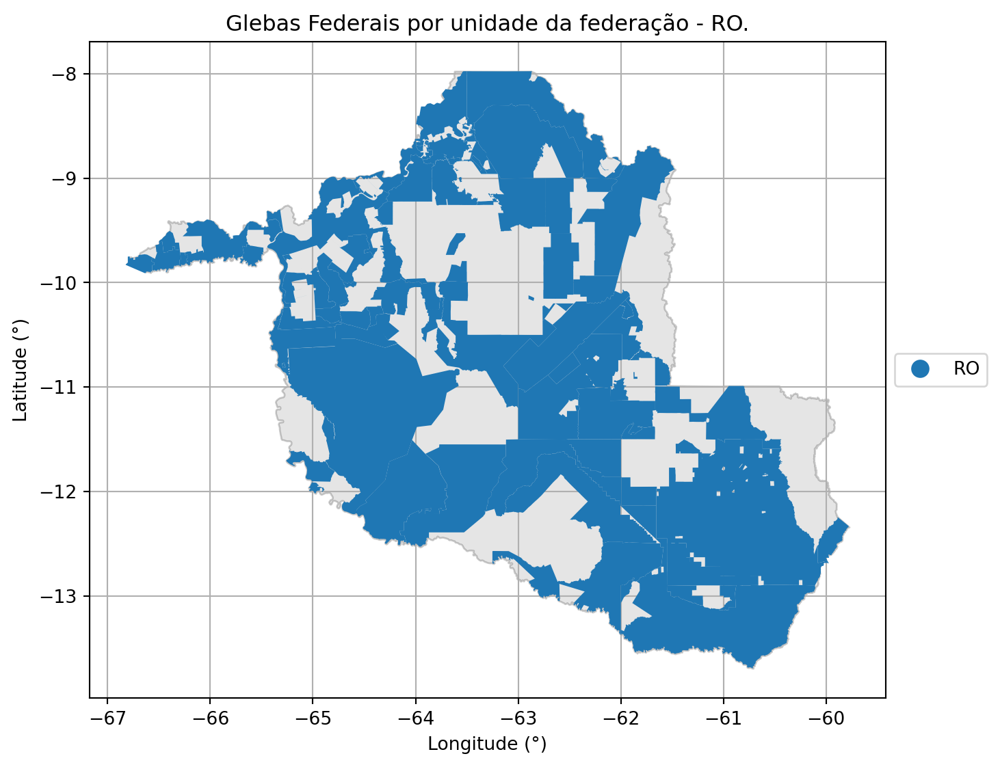
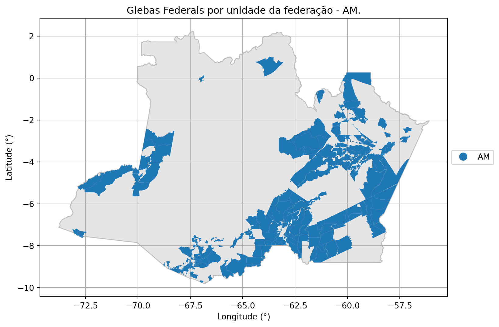
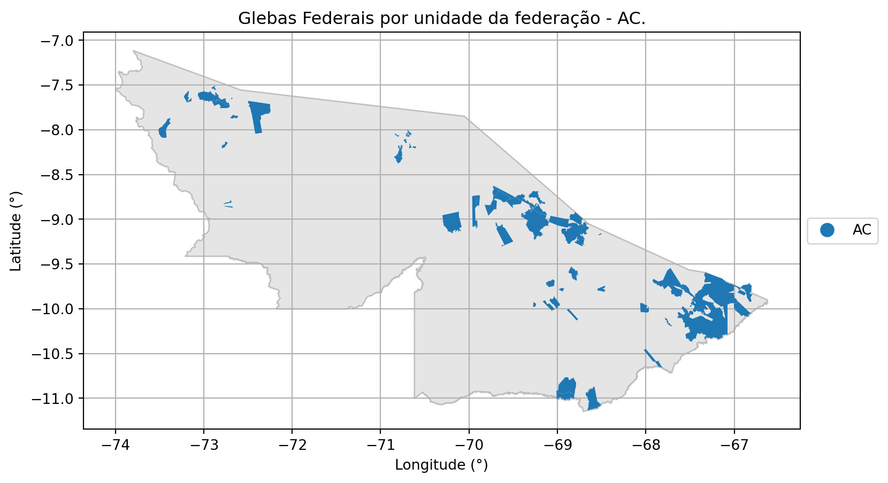
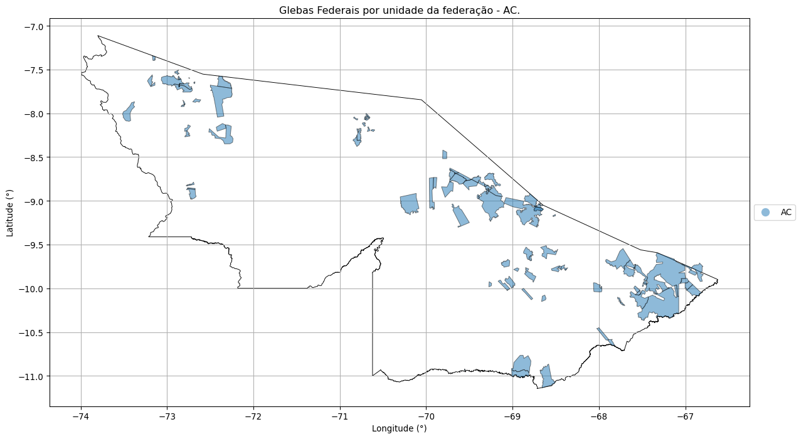
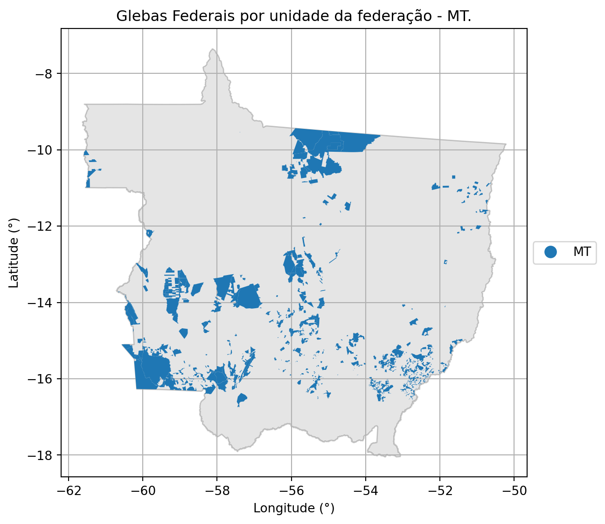
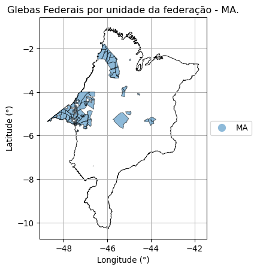
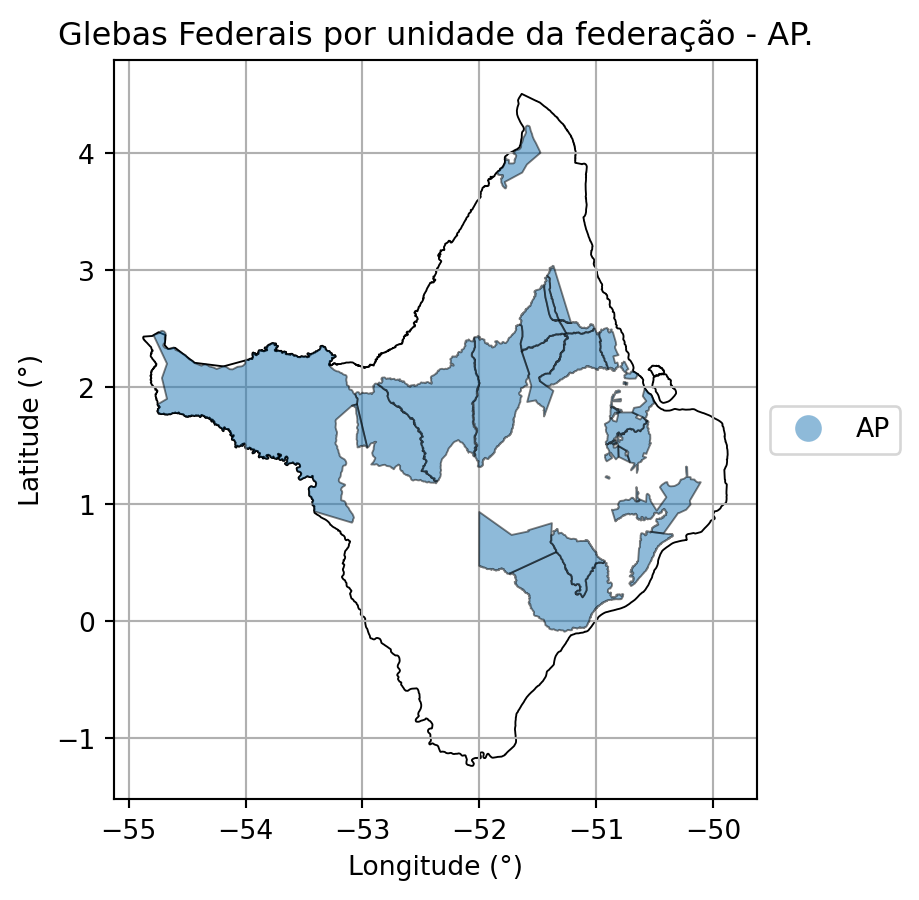
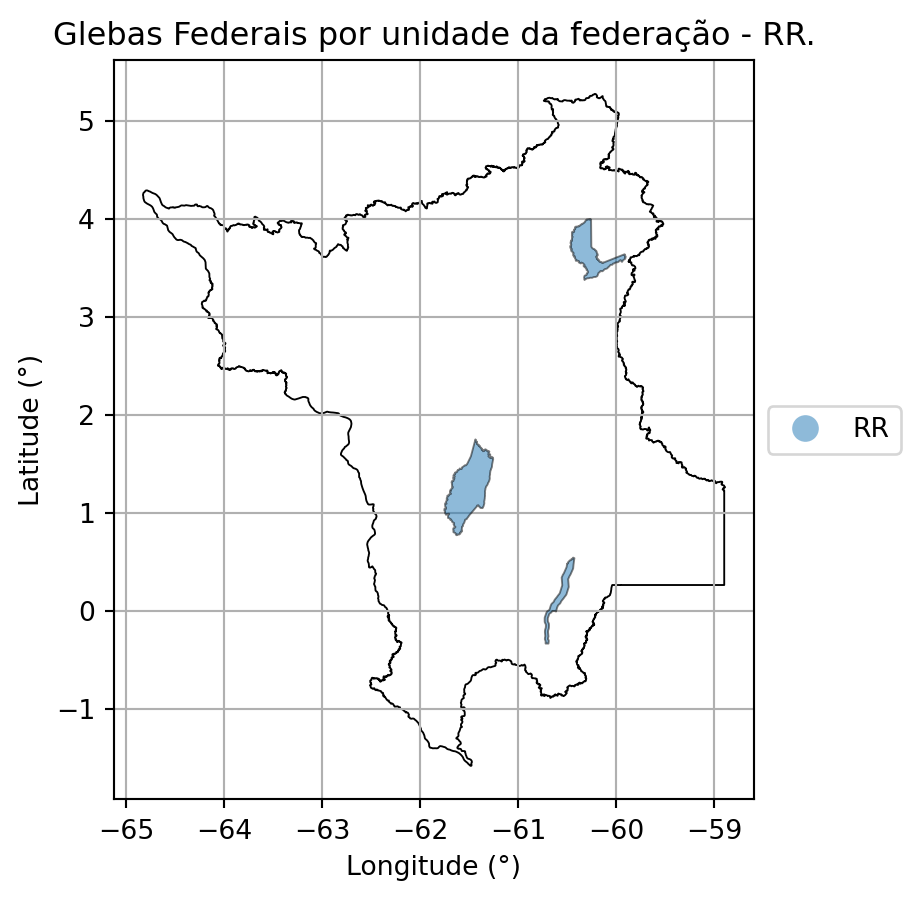